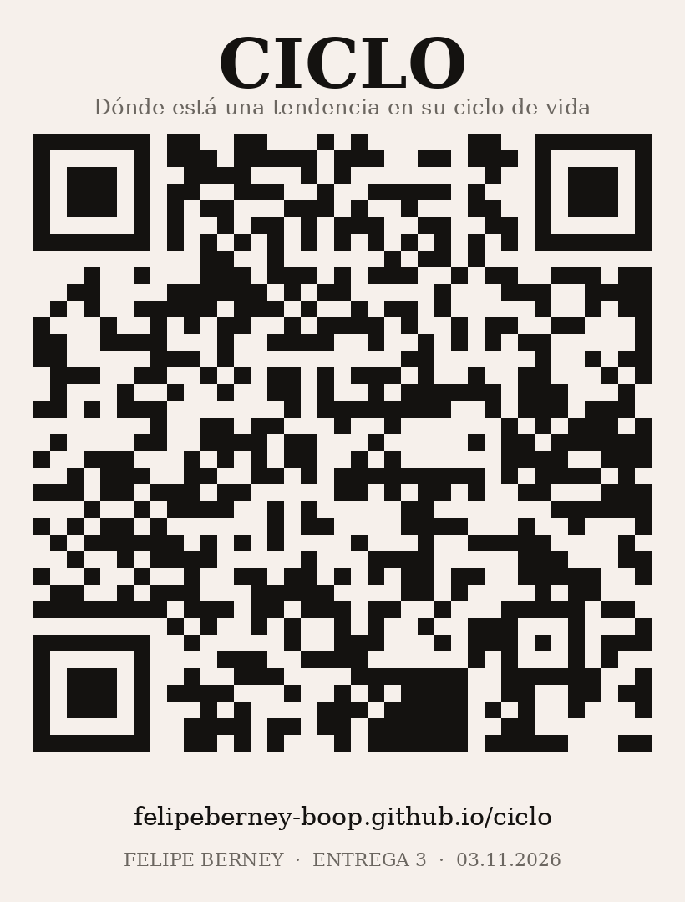

<!doctype html>
<html lang="es">
<head>
<meta charset="utf-8">
<meta name="viewport" content="width=device-width, initial-scale=1">
<meta name="color-scheme" content="light">
<meta name="description" content="CICLO · Entrega 3. La hipótesis, los datos, la IA y de Figma al código, con la app online. UdeSA, Sistemas generativos e IA para Diseño, 2026.">
<meta name="robots" content="noindex">
<title>CICLO · Entrega 3</title>
<link rel="preconnect" href="https://fonts.googleapis.com">
<link rel="preconnect" href="https://fonts.gstatic.com" crossorigin>
<link href="https://fonts.googleapis.com/css2?family=Inter:wght@300;400;600;700&display=swap" rel="stylesheet">
<style>
/* CICLO · Entrega 3. La misma paleta que la app: negro, crema y blanco. El único color es la señal
   (Entrar, Esperar, Salir), y sólo en la lámina que la explica, siempre con su palabra. */
:root{
  --paper:#F6F0EB; --card:#FFFFFF; --ink:#0E0D0B; --ink-2:#4A4741; --ink-3:#8A857C;
  --rule:#D6CCC2; --rule-2:#E6DED5;
  --entrar:#2C6A3D; --esperar:#9A6200; --salir:#A5372A;
  --serif:"Bodoni Moda",Georgia,serif; --sans:"Archivo",system-ui,sans-serif; --mono:"IBM Plex Mono",ui-monospace,monospace;
  --m:clamp(16px,4.6vw,72px);
}
*{box-sizing:border-box}
[hidden]{display:none!important}
html,body{height:100%;margin:0}
body{background:var(--paper);color:var(--ink);font:16px/1.5 var(--sans);overflow:hidden;-webkit-font-smoothing:antialiased}
button{font:inherit;color:inherit;background:none;border:0;cursor:pointer;padding:0}
:focus-visible{outline:2px solid var(--ink);outline-offset:3px}
a{color:inherit}

/* ── lámina ── */
#deck{position:fixed;inset:0 0 64px 0}
.slide{position:absolute;inset:0;display:grid;grid-template-columns:5fr 7fr;grid-template-rows:auto minmax(0,1fr);
  column-gap:clamp(28px,4vw,72px);padding:clamp(22px,5vh,52px) var(--m) 16px;
  opacity:0;transform:translateX(18px);pointer-events:none;transition:opacity .35s ease,transform .45s cubic-bezier(.2,.7,.2,1)}
.slide.on{opacity:1;transform:none;pointer-events:auto}
.slide.past{transform:translateX(-18px)}
.slide.ancha{grid-template-columns:1fr}
.slide.ancha>.izq{grid-column:1}

/* encabezado: título enorme, bajada en itálica, fecha en mono chiquita */
.enc{grid-column:1/-1;display:grid;grid-template-columns:1fr auto;align-items:end;column-gap:20px;
  padding-bottom:clamp(12px,2.2vh,22px);margin-bottom:clamp(16px,3vh,30px);border-bottom:1px solid var(--ink)}
.enc h2{margin:0;font:400 clamp(34px,4.4vw,64px)/1 var(--serif);letter-spacing:-.02em}
.enc .bajada{margin:8px 0 0;font:italic 400 clamp(17px,1.7vw,24px)/1.2 var(--serif);color:var(--ink-2)}
.enc .fecha{grid-column:2;grid-row:1;align-self:start;margin:0;font:500 11px/1 var(--mono);letter-spacing:.18em;text-transform:uppercase;color:var(--ink-3);white-space:nowrap;padding-top:.6em}

/* columna izquierda: cuerpo y filas de diálogo */
.izq{grid-column:1;grid-row:2;min-height:0;overflow-y:auto;scrollbar-width:none;display:flex;flex-direction:column;gap:clamp(12px,2.2vh,22px)}
.izq::-webkit-scrollbar{display:none}
.cuerpo{margin:0;font:400 clamp(17px,1.45vw,21px)/1.5 var(--sans);color:var(--ink);max-width:34ch}
.slide.ancha .cuerpo{max-width:52ch}
.fila{display:grid;grid-template-columns:96px 1fr;column-gap:16px;align-items:start}
.quien{display:flex;flex-direction:column;align-items:flex-start;gap:6px;padding-top:4px}
.quien b{font:500 10px/1 var(--mono);letter-spacing:.16em;text-transform:uppercase}
.quien small{font:400 10px/1 var(--mono);letter-spacing:.06em;color:var(--ink-3)}
.tipo{display:inline-block;padding:3px 8px 4px;border-radius:999px;font:500 10.5px/1 var(--mono);letter-spacing:.03em;border:1px solid var(--ink)}
.tipo.resultado,.tipo.propuesta{background:var(--ink);color:var(--paper)}
.tipo.devolucion{border-style:dashed}
.tipo.eleccion{background:var(--card)}
.tipo.registro{border-color:var(--ink-3);color:var(--ink-2)}
.fila q{quotes:"«" "»";font:400 clamp(16px,1.3vw,19.5px)/1.42 var(--serif);color:var(--ink)}
.fila.grande q{font-size:clamp(20px,1.85vw,27px);line-height:1.3}
.fila p{margin:0;font-size:clamp(14px,1.05vw,15.5px);line-height:1.55;color:var(--ink-2)}
.fuente{margin:0;font:400 11px/1.4 var(--mono);color:var(--ink-3)}
.fila .fuente{margin-top:6px}

/* columna derecha: imágenes con su pie, o un visual dibujado */
.der{grid-column:2;grid-row:2;position:relative;min-height:0;display:grid;grid-template-rows:minmax(0,1fr) auto;gap:10px}
.der .escena{position:relative;min-height:0}
.der figure{position:absolute;inset:0;margin:0;opacity:0;transition:opacity .3s ease;pointer-events:none}
.der figure.on{opacity:1}
.slide.on .der figure.on{pointer-events:auto} /* sólo la lámina visible recibe clics */
.der img{width:100%;height:100%;object-fit:contain;object-position:center top;border-radius:12px;filter:drop-shadow(0 14px 34px rgba(14,13,11,.16))}
.der .barra{display:grid;grid-template-columns:1fr auto auto auto;align-items:center;gap:12px;min-height:32px}
.der .pie{font:italic 15px/1.3 var(--serif);color:var(--ink-2)}
.der .cuenta{font:500 11px var(--mono);letter-spacing:.12em;color:var(--ink-3);font-variant-numeric:tabular-nums}
.der .flecha{width:32px;height:32px;border-radius:50%;display:grid;place-items:center;border:1px solid var(--rule);font-size:13px}
.der .flecha:hover{border-color:var(--ink)}
.der.una .flecha,.der.una .cuenta{display:none}
.der.dibujo{grid-template-rows:minmax(0,1fr)}
.dib{display:flex;flex-direction:column;justify-content:center;gap:18px;height:100%;min-height:0}
.dib svg{width:100%;height:auto;max-height:100%;overflow:visible}

/* visuales dibujados */
.cifras{display:grid;grid-template-columns:repeat(var(--n,3),1fr);gap:clamp(16px,2.6vw,40px)}
.cifra{border-top:1px solid var(--ink);padding-top:12px}
.cifra .n{display:block;font:400 clamp(40px,4.8vw,76px)/1 var(--serif);letter-spacing:-.02em}
.cifra .t{display:block;margin-top:10px;font-size:clamp(14px,1.1vw,16px);line-height:1.45;color:var(--ink-2)}
.cifra .t b{color:var(--ink);font-weight:600}
.pista{position:relative;margin:30px 6px 0}
.pista .linea{height:1px;background:var(--ink)}
.pista ol{list-style:none;margin:0;padding:0;display:grid;grid-template-columns:repeat(5,1fr)}
.pista li{position:relative;padding-top:22px;font:400 clamp(18px,1.6vw,24px)/1.1 var(--serif)}
.pista li::before{content:"";position:absolute;top:-6px;left:0;width:11px;height:11px;border-radius:50%;background:var(--paper);border:1px solid var(--ink)}
.pista li.aca::before{background:var(--ink)}
.pista li small{display:block;margin-top:8px;font:400 13px/1.4 var(--sans);color:var(--ink-2)}
.tarjetas{display:grid;grid-template-columns:repeat(var(--n,3),1fr);gap:clamp(12px,1.6vw,24px)}
.tarjeta{background:var(--card);border:1px solid var(--rule);border-radius:14px;padding:clamp(16px,1.8vw,26px);display:flex;flex-direction:column;gap:10px}
.tarjeta .num{font:500 11px/1 var(--mono);letter-spacing:.16em;color:var(--ink-3)}
.tarjeta h3{margin:0;font:400 clamp(22px,2vw,30px)/1.05 var(--serif)}
.tarjeta p{margin:0;font-size:clamp(14px,1.05vw,15.5px);line-height:1.5;color:var(--ink-2)}
.tarjeta .cuando{margin-top:auto;font:500 10.5px/1 var(--mono);letter-spacing:.16em;text-transform:uppercase;color:var(--ink-3)}
.tarjeta.ir{cursor:pointer;transition:transform .18s ease,box-shadow .18s ease}
.tarjeta.ir:hover{transform:translateY(-2px);box-shadow:0 14px 34px -18px rgba(14,13,11,.32)}
.metodos{list-style:none;margin:0;padding:0;display:grid;gap:10px}
.metodos li{display:grid;grid-template-columns:1fr auto;align-items:baseline;gap:16px;padding:14px 18px;background:var(--card);border:1px solid var(--rule);border-radius:10px;font:400 clamp(17px,1.4vw,20px)/1.3 var(--serif)}
.metodos li span{font:500 11px/1 var(--mono);letter-spacing:.14em;text-transform:uppercase;color:var(--ink-3)}
.metodos li.base{background:none;border-style:dashed}
.senales{display:flex;flex-direction:column;gap:12px}
.sen{display:grid;grid-template-columns:auto 1fr;align-items:center;gap:18px;padding:16px 20px;border:1px solid var(--rule);border-radius:12px;background:var(--card)}
.sen b{font:400 clamp(26px,2.4vw,36px)/1 var(--serif)}
.sen.e b{color:var(--entrar)}.sen.w b{color:var(--esperar)}.sen.s b{color:var(--salir)}
.sen span{font-size:15px;color:var(--ink-2)}
.proc{display:flex;gap:22px;flex-wrap:wrap;margin-top:6px;font:500 12px/1 var(--mono);letter-spacing:.06em;color:var(--ink-2)}
.proc span{padding:7px 12px;border:1px solid var(--ink);border-radius:999px}
.proc span.i{border-style:dashed}.proc span.p{border-color:var(--ink-3)}
.pasos{display:grid;grid-template-columns:repeat(4,1fr);gap:clamp(12px,1.6vw,22px)}
.paso{border-top:1px solid var(--ink);padding-top:14px}
.paso .n{font:400 clamp(44px,4.2vw,64px)/1 var(--serif)}
.paso h3{margin:10px 0 6px;font:500 clamp(17px,1.4vw,20px)/1.2 var(--sans)}
.paso p{margin:0;font-size:clamp(14px,1.05vw,15.5px);line-height:1.5;color:var(--ink-2)}
.flujo{display:grid;grid-template-columns:1fr auto 1fr auto 1fr auto 1fr;align-items:center;gap:10px}
.flujo .caja{background:var(--card);border:1px solid var(--rule);border-radius:14px;padding:16px;min-height:150px}
.flujo .caja.pub{border-color:var(--ink)}
.flujo .caja b{display:block;font:400 clamp(19px,1.6vw,24px)/1.1 var(--serif);margin-bottom:8px}
.flujo .caja p{margin:0;font-size:14px;line-height:1.45;color:var(--ink-2)}
.flujo .caja small{display:block;font:500 10px/1 var(--mono);letter-spacing:.16em;text-transform:uppercase;color:var(--ink-3);margin-bottom:10px}
.flujo i{font-style:normal;font-size:20px;color:var(--ink-3)}
.grande-url{font:400 clamp(28px,3.6vw,54px)/1.05 var(--serif);letter-spacing:-.01em;word-break:break-word}
.lista-demo{list-style:none;margin:0;padding:0;display:grid;gap:10px;counter-reset:d}
.lista-demo li{counter-increment:d;display:grid;grid-template-columns:44px 1fr auto;align-items:baseline;gap:12px;padding:14px 0;border-top:1px solid var(--rule);font:400 clamp(18px,1.6vw,24px)/1.2 var(--serif)}
.lista-demo li::before{content:counter(d,decimal-leading-zero);font:500 12px/1 var(--mono);letter-spacing:.12em;color:var(--ink-3)}
.lista-demo li span{font:500 11px/1 var(--mono);letter-spacing:.1em;color:var(--ink-3)}

/* portada y cierre */
.slide.portada{grid-template-columns:5fr 7fr;grid-template-rows:1fr}
.portada .izq{grid-row:1;justify-content:flex-end;gap:0;overflow:visible}
.portada h1{margin:0;font:400 clamp(88px,12vw,190px)/.84 var(--serif);letter-spacing:.06em}
.portada .bajada{margin:16px 0 0 .06em;font:italic 400 clamp(26px,2.8vw,44px)/1 var(--serif);color:var(--ink-2)}
.portada .firma{display:flex;flex-direction:column;gap:7px;margin:clamp(32px,7vh,80px) 0 0 .12em;font:500 10.5px/1 var(--mono);letter-spacing:.22em;text-transform:uppercase;color:var(--ink-2)}
.portada .firma span+span{color:var(--ink-3)}
.portada .der{grid-row:1}
.portada .der img{object-position:center}

/* navegación de abajo: secciones con un punto por lámina */
#nav{position:fixed;left:0;right:0;bottom:0;height:64px;display:flex;align-items:center;gap:clamp(10px,1.6vw,26px);padding:0 var(--m);border-top:1px solid var(--rule);background:var(--paper);overflow-x:auto;scrollbar-width:none}
#nav::-webkit-scrollbar{display:none}
.sec{display:flex;flex-direction:column;gap:7px;flex:none}
.sec>button{font:500 10px/1 var(--mono);letter-spacing:.14em;text-transform:uppercase;color:var(--ink-3);text-align:left;white-space:nowrap}
.sec.on>button{color:var(--ink)}
.puntos{display:flex;gap:4px}
.puntos button{width:16px;height:3px;background:var(--rule)}
.puntos button.on{background:var(--ink)}
.puntos button:hover{background:var(--ink-3)}
#num{margin-left:auto;flex:none;font:500 11px var(--mono);letter-spacing:.12em;color:var(--ink-3);font-variant-numeric:tabular-nums}

/* notas del orador: tecla N */
#notas{position:fixed;right:16px;bottom:76px;width:min(460px,calc(100vw - 32px));max-height:42vh;overflow:auto;z-index:20;
  background:var(--card);border:1px solid var(--ink);border-radius:14px;padding:16px 18px;font-size:14.5px;line-height:1.55;color:var(--ink-2);box-shadow:0 14px 34px -18px rgba(14,13,11,.32)}
#notas b{display:block;font:500 10px/1 var(--mono);letter-spacing:.16em;text-transform:uppercase;color:var(--ink);margin-bottom:8px}
#ayuda{margin-left:auto;flex:none;font:500 10px/1 var(--mono);letter-spacing:.12em;color:var(--ink-3);white-space:nowrap}
#ayuda+#num{margin-left:0}

/* zoom de imagen */
#zoom{position:fixed;inset:0;z-index:30;background:rgba(246,240,235,.97);display:grid;place-items:center;padding:3vh 3vw;cursor:zoom-out}
#zoom img{max-width:100%;max-height:100%;border-radius:10px;box-shadow:0 20px 60px -20px rgba(14,13,11,.4)}

/* celular: una columna, la lámina se desliza */
@media (max-width:820px){
  .slide,.slide.portada{grid-template-columns:1fr;grid-template-rows:auto auto auto;overflow-y:auto;padding:20px 16px 24px;align-content:start}
  .izq,.der,.portada .izq,.portada .der{grid-column:1;grid-row:auto;overflow:visible}
  .der{min-height:260px;margin-top:18px}
  .der.dibujo{min-height:0}
  .der .escena{height:min(56vw,320px)}
  .cifras,.tarjetas,.pasos{grid-template-columns:1fr}
  .flujo{grid-template-columns:1fr}.flujo i{transform:rotate(90deg);justify-self:center}
  .pista ol{grid-template-columns:1fr;gap:10px}.pista .linea{display:none}.pista li{padding:0 0 0 22px}.pista li::before{top:4px}
  .fila{grid-template-columns:78px 1fr}
  .cuerpo{max-width:none}
  #ayuda{display:none}
  .portada h1{font-size:clamp(64px,22vw,120px)}
  .demo-g{grid-template-columns:1fr!important}.grande-url{font-size:30px;word-break:normal}
}
@media (prefers-reduced-motion:reduce){.slide,.der figure{transition:none}}

/* ── estilo de página de producto (27/10), el mismo de la app: tipografía del sistema, blanco y gris perla,
   tarjetas de 18 px, nada en mayúsculas espaciadas; el azul sólo en la navegación. ── */
:root{--sf:-apple-system,BlinkMacSystemFont,"SF Pro Display","SF Pro Text","Inter",system-ui,sans-serif;
  --serif:var(--sf);--sans:var(--sf);--mono:var(--sf);
  --paper:#ffffff;--card:#f5f5f7;--ink:#1d1d1f;--ink-2:#424245;--ink-3:#86868b;--rule:#e0e0e0;--rule-2:#f0f0f0;--azul:#0066cc}
body{letter-spacing:-.022em}
*{text-transform:none!important}
.enc{border-bottom:0;padding-bottom:6px}
.enc h2{font-weight:600;letter-spacing:-.03em;font-size:clamp(36px,4.4vw,64px)}
.enc .bajada{font-style:normal;font-weight:400;color:var(--ink-3)}
.enc .fecha,.quien b,.quien small,.tipo,.cuenta,.tarjeta .num,.tarjeta .cuando,.metodos li span,.flujo .caja small,.sec>button,#num,#ayuda,.fuente,.lista-demo li span,.lista-demo li::before,.portada .firma{letter-spacing:-.005em!important}
.enc .fecha{font-size:13px;font-weight:400}
.quien b{font-size:12px;font-weight:600}
.tipo{font-size:12px;font-weight:400;padding:3px 9px 4px}
.fila q{font-weight:300;letter-spacing:-.015em;font-size:clamp(17px,1.4vw,21px)}
.fila.grande q{font-weight:300;font-size:clamp(22px,2vw,30px)}
.cifra{border-top:0}.cifra .n{font-weight:600;letter-spacing:-.03em}
.paso{border-top:0}.paso .n{font-weight:600;color:var(--azul)}
.tarjeta,.metodos li,.sen,.flujo .caja{background:var(--card);border:0}
.tarjeta h3,.flujo .caja b,.metodos li,.lista-demo li,.grande-url,.pista li{font-weight:600;letter-spacing:-.02em}
.metodos li.base{background:none;border:1px dashed var(--rule)}
.sen b{font-weight:600}
.flujo .caja.pub{box-shadow:inset 0 0 0 2px var(--azul)}
.der img{border-radius:18px;filter:drop-shadow(3px 5px 30px rgba(0,0,0,.22))}
.der .pie{font-style:normal;font-size:14px;color:var(--ink-3)}
.portada h1{font-weight:600;letter-spacing:.06em}
.portada .bajada{font-style:normal;font-weight:300;color:var(--ink-3)}
.portada .firma{font-size:13px;font-weight:400}
.sec>button{font-size:12px}.sec.on>button{color:var(--ink);font-weight:600}
.puntos button.on{background:var(--azul)}
#nav{background:color-mix(in srgb,#fff 82%,transparent);-webkit-backdrop-filter:blur(14px);backdrop-filter:blur(14px)}
#notas{border:0;background:var(--card);box-shadow:none}
.pista .linea{background:var(--rule)}.pista li::before{border-color:var(--ink-3)}
/* Entrega 3: el prompt en pantalla, el QR y lo interpretado con borde punteado */
.prompt{margin:0;max-height:100%;overflow:auto;background:var(--card);border-radius:18px;padding:18px 22px;white-space:pre-wrap;word-break:break-word;
  font:400 clamp(11.5px,.9vw,13.5px)/1.5 "SF Mono",ui-monospace,Menlo,monospace;letter-spacing:0;color:var(--ink-3)}
.prompt b{color:var(--ink);font-weight:600}
.dib:has(.prompt){justify-content:flex-start}
.sen.i{background:none;border:1px dashed var(--ink-3)}
.metodos li.ok{box-shadow:inset 0 0 0 2px var(--ink)}
.qr{width:clamp(150px,15vw,240px);height:auto;border-radius:12px}
.tarjetas[style*="--n:4"]{grid-template-columns:repeat(4,1fr)}
.slide.imgancha{grid-template-columns:1fr}.slide.imgancha>.der{grid-column:1}.slide.imgancha .der .pie{font-size:clamp(15px,1.25vw,19px);color:var(--ink-2)}
.tarjetas.grandes p{font-size:clamp(16px,1.3vw,19px)}.tarjetas.grandes .cuando{font-size:clamp(13px,1vw,15px);line-height:1.4;color:var(--ink-2)}
@media (max-width:820px){.tarjetas[style*="--n:4"],.cifras[style*="--n:4"]{grid-template-columns:1fr}
  /* en el celular la lámina es una columna que se desliza: cada bloque con su alto, sin encimarse */
  .slide,.slide.portada{display:flex;flex-direction:column}.slide>*{flex:none}
  .dib{height:auto}.prompt{max-height:none}
  .demo-g .qr{width:160px}}
.fila>div{min-width:0}.fuente{overflow-wrap:anywhere}
@media print{
  body{overflow:visible}#deck{position:static}#nav,#ayuda,#notas{display:none!important}
  .slide{position:relative;inset:auto;opacity:1;transform:none;height:100vh;page-break-after:always;break-after:page}
  .der figure{opacity:0}.der figure:first-child{opacity:1}
}
</style>
</head>
<body>
<main id="deck" aria-live="polite"></main>
<nav id="nav" aria-label="Secciones"></nav>
<aside id="notas" hidden></aside>
<div id="zoom" hidden></div>

<script>
/* ════════════════════════════════════════════════════════════════════════════════════════════
   El contenido. Para sumar una lámina en la Entrega 4: agregá un objeto donde corresponde.
   La numeración, los puntos de la barra y los links (#id) salen solos; el id es el ancla y no
   cambia aunque cambie el orden.

   Citas: textuales, de las transcripciones de Claude Code (13/10 al 27/10/2026), con la ortografía
   corregida y las palabras intactas; «(…)» marca un corte. Lo que no tiene cita textual va como
   texto (t:), en tercera persona, nunca entre comillas.
   Fila: {q:'Felipe', k:'pedido', f:'13/10', c:'cita'}  ·  {q:'Claude', k:'resultado', t:'texto'}
   Tipos: pedido · devolucion · eleccion · propuesta · resultado · registro
   ════════════════════════════════════════════════════════════════════════════════════════════ */
const TRENCH={desde:'2016-01',v:[18,17,18,18,15,12,11,12,16,23,21,21,18,18,19,17,14,11,12,14,21,24,24,21,19,19,20,19,14,11,11,14,20,24,23,22,20,20,22,18,15,14,12,15,21,26,26,23,19,19,14,11,12,11,12,14,20,23,21,22,18,18,19,17,17,12,13,16,22,29,32,27,23,22,24,24,18,15,13,16,29,32,29,28,24,25,26,26,20,14,16,20,28,32,34,31,29,29,33,30,22,18,19,23,41,42,41,41,35,33,36,30,25,22,22,35,51,57,55,46,38,59,65,100,86,37,28,40,58,49]};
/* commits por día, de `git log` (06/10 al 27/10, antes de esta presentación) */
const COMMITS={'2026-10-06':1,'2026-10-13':22,'2026-10-14':3,'2026-10-20':30,'2026-10-21':3,'2026-10-25':1,'2026-10-26':19,'2026-10-27':2};

/* el system prompt de Preguntar, el mismo texto de prompts/prompt_asistente_v5.md y de AS_INSTR en la app */
const PROMPT_V5="Sos el asistente de CICLO dentro de una herramienta de diseño: quien pregunta está armando una prenda y tiene una duda concreta.\nReglas:\n- NUNCA digas que tenés un dato que no está en DATOS. Cada número que digas tiene que estar en DATOS, tal cual, con su unidad (si DATOS dice «puntos», decí puntos, no %). No inventes cifras, años, marcas, temporadas ni fuentes, y no redondees hacia lo que suena mejor.\n- Pero NUNCA te quedes en el «no». Si lo que pide no está, decí en una frase qué no tenés y contestá con lo más cercano que sí está en DATOS, en este orden: un hermano de la misma familia, después el padre, después el atributo suelto sin cruzar con la prenda. Decí siempre qué estás mostrando en lugar de qué («de X no tengo serie; muestro Y, su pariente, porque…»). Si DATOS ya trae «prestado de», usá esa misma explicación.\n- Si pregunta por «ahora», 2025, 2026 o más adelante: explicá el corte en una frase, con lo que dice DATOS, y contestá con lo último medido (2022→2024). Si pide futuro, decí que CICLO no pronostica y mostrá hacia dónde venía.\n- Sólo si no hay nada cercano —ni hermano, ni padre, ni atributo suelto— decí que no, poné \"fuera_de_datos\": true y en \"siguiente\" ofrecé una pregunta parecida que sí puedas contestar.\n- Cerrá siempre con algo accionable sobre su diseño: un cambio en \"acciones\" si hay OPCIONES; si no, la última oración de \"respuesta\" dice qué elegir o probar en Diseñar.\n- Hablá del diseño que está armando (TU DISEÑO) y de lo que CLIP leyó en su imagen, si hay: no le hagas repetir nada.\n- Decí si cada dato es medido, interpretado (CLIP) o prestado de un pariente, como dice DATOS.\n- Recomendá según su perfil. Si una ficha trae «para vos (regla de CICLO)», esa es la acción: usala y explicá su porqué. Sólo te apartás si un dato lo justifica, y lo decís.\n- \"respuesta\" tiene de 2 a 4 oraciones, en este orden: (1) si falta algo, o si pregunta por «ahora» o por después de 2024, eso primero, en una frase y con su porqué tal como está en DATOS; (2) lo más cercano que sí está, con su número y de dónde sale; (3) si la pregunta es general, qué sube más y qué cae; (4) qué hacer en su diseño. Nunca termines en «no lo tengo». El dato va también en \"atributos\" y \"datos\"; el cambio, en \"acciones\".\n- Cada número con su fuente exacta, como la nombra DATOS: «afuera 2022→2024» y «señal» son búsqueda mundial; «colores (CLIP, pasarela…)» es el porcentaje de looks de pasarela que leyó CLIP (interpretación), nunca búsquedas; «de su pico» es un nivel, no un crecimiento. Para decir qué sube o qué cae, usá «afuera 2022→2024» o «señal».\n- En una pregunta general («¿qué material…?», «¿qué estampa…?») nombrá los dos que más suben y uno que cae, cada uno con su número.\n- En \"respuesta\" y en \"datos\" van nombres, nunca ids (nada de «material_gamuza» ni «id: cuero»).\n- Un estilo de calzado no se toma prestado de otro. Si DATOS trae «sin dato: ni serie propia ni de un pariente», decí por qué no se mide (lo dice DATOS) y ofrecé en \"siguiente\" preguntar por los que sí se miden (marcados «alternativa»), sin presentarlos como dato del que pidió.\n- \"fuera_de_datos\" va siempre: true sólo si no había nada cercano.\nEJEMPLOS DE CÓMO TIENE QUE SONAR (las letras son de ejemplo: usá los nombres y números de DATOS):\nP: ¿Qué material está de moda ahora? → «De 2025 y 2026 no tengo lectura: [el porqué de DATOS, con sus números]. Con lo medido hasta 2024, el que más sube es A (+X puntos), después B (+Y); C y D caen. Si tu prenda lo admite, probá A.»\nP: ¿Qué va a estar de moda en 2027? → «CICLO no pronostica: lo último medido es 2022→2024. Hasta ahí, lo que más ganaba terreno era A (+X) y B (+Y), y lo que más perdía, C (−Z). Para tu perfil, A está en pico: [la regla de CICLO para esa etapa].»\nP: ¿Las botinetas están de moda? → «De botinetas CICLO no tiene medición: [los dos porqués de DATOS]. Un estilo de calzado no dice nada de otro, así que no lo tomo prestado. En calzado sí se miden A (+X) y B (−Y).» con \"siguiente\": [\"¿Cómo vienen los A?\"].\n- \"acciones\": hasta 2 cambios concretos sobre su diseño, sólo con pasos y valores de OPCIONES, y sólo si DATOS los respalda; \"texto\" en castellano y corto («Probá tiro alto»). Sin diseño u OPCIONES, [].\n- Del calzado y los accesorios CICLO mide poco: zapatillas, mocasines y tote en la búsqueda, y zapatillas y botas texanas en la pasarela (CLIP: interpretación, nunca señal). El resto no tiene dato. CICLO tampoco separa hombre y mujer en los datos, no detecta lo emergente y no pronostica: si te lo piden, decilo.\n- Castellano rioplatense, sin jerga, tono directo. En \"respuesta\" va sólo el texto para leer.\nRespondé SOLO con un objeto JSON, sin texto antes ni después:\n{\n  \"respuesta\": \"1 a 3 oraciones\",\n  \"accion\": \"Entrar | Esperar | Explorar | Salir, o \\\"\\\" si la pregunta no pide decidir\",\n  \"atributos\": [\"id de cada línea de DATOS que usaste\"],\n  \"datos\": [\"hasta 3: el número que usaste y de dónde sale, con nombres, nunca ids\"],\n  \"fuera_de_datos\": false,\n  \"acciones\": [{\"paso\": \"tiro\", \"valor\": \"alto\", \"texto\": \"Probá tiro alto: sube en la búsqueda\"}],\n  \"siguiente\": [\"hasta 2 preguntas cortas para seguir\"]\n}";

const LAMINAS=[
/* ── Inicio ───────────────────────────────────────────────────────────────── */
{id:'portada',sec:'Inicio',portada:true,
 img:[{s:'tendencias',p:'Tendencias, la pantalla principal'}],
 notas:'CICLO ubica un atributo de moda —un color, una estampa, un corte, un material— en una de cinco etapas de su ciclo de vida. Quince minutos en cinco partes: la hipótesis (2), los datos (3), la IA (3), de Figma al código (3) y la demo (4). La app está online: el QR está en la lámina de la demo.'},

/* ── 1 · La hipótesis · 2 min ─────────────────────────────────────────────── */
{id:'hipotesis',sec:'1 · Hipótesis',titulo:'La hipótesis, ajustada',bajada:'Qué era y qué quedó',fecha:'2 min',
 filas:[
  {q:'Entrega 1',k:'registro',f:'25/08',c:'Al cruzar señales tempranas provenientes de los desfiles con el crecimiento de búsquedas online y datos históricos de consumo, sería posible identificar en qué etapa de su ciclo se encuentra una tendencia.'},
  {q:'Hoy',k:'resultado',f:'27/10',fu:'hipotesis.md',c:'Cruzando pasarela y búsqueda, CICLO distingue los atributos que suben de los que no, y esa lectura coincide con fuentes que el modelo nunca vio. No predice, y la pasarela no adelanta a la búsqueda.',g:true}],
 dib:'veredictos',
 notas:'La hipótesis original juntaba tres afirmaciones: que la pasarela adelanta a la búsqueda («señales tempranas»), que se puede predecir, y que se puede ubicar la etapa del presente. Las dos primeras se probaron y se cayeron; la tercera se sostiene. También cambió la unidad: «tendencia» no se puede contar, el atributo sí (01/09). Todo está en hipotesis.md, con la fecha de cada prueba.'},
{id:'reddit',sec:'1 · Hipótesis',titulo:'Lo que sube, sube afuera',bajada:'La prueba que la sostiene',fecha:'27 oct',
 cuerpo:'Reddit, una fuente que el modelo no usa. El criterio se escribió y se commiteó antes de calcular.',
 filas:[
  {q:'Resultado',k:'resultado',f:'27/10',t:'Los tres que el K-means pone en ascenso o pico son los tres que más crecen, de 14. Barajando las etapas 10.000 veces, p = 0,0013.'},
  {q:'Límite',k:'registro',f:'27/10',t:'No distingue «en retorno» de «saturada» (p = 0,88). Y es un solo foro, en inglés.'}],
 dib:'reddit',
 notas:'Por rangos, el control agregado después, p = 0,047. Límites: 14 atributos, uno solo en ascenso, y Reddit y Google reflejan en parte lo mismo. La otra prueba preregistrada, la pasarela por temporada (de 3 a 18 meses), dio que no adelanta: medianas entre −0,04 y +0,04, hacía falta p < 0,007.'},
{id:'decision',sec:'1 · Hipótesis',titulo:'La decisión que hoy no se toma bien',bajada:'Para quién es',fecha:'Ago – Oct',
 filas:[
  {q:'Entrega 2',k:'registro',f:'05/10',t:'La usuaria era una forecaster independiente que asesora a varias marcas.'},
  {q:'Felipe',k:'devolucion',f:'13/10',c:'(…) mi maestro, que me dijo que lo más importante a resolver es la interfaz, que es muy confusa, caótica y desarmado.'},
  {q:'Hoy',k:'resultado',t:'Quien diseña, para una marca o por su cuenta. La decisión: ¿entro con este atributo, con mi plazo de producción?',g:true}],
 dib:'decision',
 notas:'El foco se movió de la forecaster a quien diseña porque la misma lectura sirve para las dos, pero quien diseña necesita que la app le diga qué hacer en su prenda, no un tablero. Lo que no puede hacer hoy: saber si un atributo está subiendo o ya pasó su pico, y si su plazo de producción llega a tiempo. Con CICLO: la etapa (K-means sobre pasarela y búsqueda) cruzada con su plazo (fast fashion 6 semanas, high fashion 6 meses, nicho 3 meses) da Entrar, Esperar o Salir, con el porqué.'},

/* ── 2 · Los datos · 3 min ────────────────────────────────────────────────── */
{id:'fuentes',sec:'2 · Datos',titulo:'Las fuentes',bajada:'Pasarela, búsqueda y venta',fecha:'3 min',ancha:true,
 cuerpo:'Tres capas que miden cosas distintas, y dos que el modelo no usa: sirven para ver si acertó.',
 dib:'fuentes4',
 notas:'Vogue Runway: 1,28 millones de looks con etiquetas, 2000–2023. Google Trends: 65 series mundiales y 14 términos para Argentina, hasta 2024. H&M: 30,6 millones de compras (2018–2020). Para validar, sin entrar al modelo: Reddit (r/femalefashionadvice), Lyst Index (34 trimestres), Amazon Reviews y Google Shopping. Zara 2018–22 y el mix de marcas son sintéticos: quedan como demostración y la app lo dice. Fuentes, fechas y licencias: datasets/fuentes_y_descargas.md.'},
{id:'calculos',sec:'2 · Datos',titulo:'Del dato al número',bajada:'Cálculos verificables',ancha:true,
 cuerpo:'Cada número se puede rehacer: el código está en codigo/, las series en datasets_procesados/, y el K-means corre en tu navegador.',
 dib:'calculos',
 notas:'Pasarela: proporción de looks del año que llevan el atributo; nivel = 2022–23 contra su máximo, momento = 2021–23 contra 2018–20. Búsqueda: dividida por el promedio de 35 términos de moda de cada año, para sacar el crecimiento de Google; nivel = 2023–24 contra su máximo, momento = 2023–24 contra 2020–21. El K-means usa esos cuatro números en 17 atributos, k = 4 (silhouette 0,32), y arranca de centroides guardados: da siempre lo mismo. Una tendencia nueva se asigna al centroide más cercano, nunca reentrena.'},
{id:'procedencia',sec:'2 · Datos',titulo:'Calculado contra inferido',bajada:'Se ve en la interfaz',
 cuerpo:'Cada número dice de dónde sale. La procedencia va en texto y trazo; el color queda para la señal.',
 izqDib:'procedencia',
 img:[{s:'ficha_procedencia',p:'Una ficha: «medido», «estimada · sintético», «interpretación · escrita por el equipo»'}],
 notas:'Medido: sale de una fuente con un cálculo en código. Interpretado: lo dijo un modelo (CLIP o el LLM), con borde punteado. Prestado: la hoja no tiene serie propia y usa la de un pariente, siempre diciendo cuál y por qué (hermano, después padre, nunca otra familia). Hoy, de 133 hojas: 74 con dato propio, 42 prestadas y 17 sin dato. Lo que no tiene dato queda neutro, no en rojo.'},
{id:'limites',sec:'2 · Datos',titulo:'Los límites',bajada:'En una lámina',ancha:true,
 dib:'limites',
 notas:'Dos ejemplos concretos. El corte en 2024: el trench coat, el ancla de todos los lotes de Google Trends, siempre picó entre octubre y diciembre; en 2026 pica en abril, y 69 de 70 series saltan a la vez (mediana +99 %). Es la medición, no la moda: todo corta en 2024. El calzado: se intentó por búsqueda (entran zapatillas y mocasines) y por pasarela con CLIP (zapatillas 8 de 8, botas texanas 7 de 8, pero lee la ropa); cinco estilos quedan sin medición, en la app con el motivo y sin recomendación. Además: hombre y mujer mezclados, la pasarela es lujo, la búsqueda es en inglés, H&M llega a 2020. Todo en Método y en el readme.'},

/* ── 3 · La IA · 3 min ───────────────────────────────────────────────────── */
{id:'tres-modelos',sec:'3 · IA',titulo:'Tres modelos',bajada:'Cada uno hace una sola cosa',fecha:'3 min',ancha:true,
 cuerpo:'Ninguno ve una fila de datos cruda. Lo que escribe el modelo de lenguaje aparece rotulado como interpretación.',
 dib:'ia',
 notas:'K-means: en el navegador, 17 atributos, 4 números cada uno. CLIP (Transformers.js, clip-vit-base-patch32): compara una foto con 14.000 looks de pasarela, también en el navegador; la foto no sale de la computadora. El LLM: gpt-oss-120b en Groq, llamado desde el navegador con la clave de cada usuario (el patrón V2 de la clase). Hay dos usos del LLM: «Preguntar» (el chat) y «Pedir lectura en vivo» en cada ficha.'},
{id:'system-prompt',sec:'3 · IA',titulo:'El system prompt',bajada:'Preguntar · versión 5',fecha:'27 oct',
 cuerpo:'Dos reglas mandan: nunca un dato que no esté en DATOS, y nunca quedarse en el «no».',
 filas:[
  {q:'Archivo',k:'registro',fu:'prompts/prompt_asistente_v5.md',t:'Versionado: v1 a v5, ninguna se sobreescribe.'},
  {q:'Prueba',k:'resultado',f:'27/10',t:'Seis preguntas reales. La v4 no alcanzó; la v5 sí: ninguna respuesta inventa un número.'}],
 dib:'prompt',
 notas:'Lo de la derecha es el prompt entero, el mismo texto que usa la app (AS_INSTR en app/index.html). En negrita, las reglas que importan: no inventar, contestar con lo más cercano diciendo qué se muestra en lugar de qué, el corte de 2024, la fuente de cada número por nombre, y responder sólo JSON. La v5 suma tres ejemplos con letras en vez de números, para que no los copie.'},
{id:'contexto',sec:'3 · IA',titulo:'Qué recibe',bajada:'Métricas, nunca filas',
 cuerpo:'El perfil, el diseño que estás armando, lo que CLIP leyó en tu imagen y sólo las fichas que nombra la pregunta.',
 izqDib:'filaMetrica',
 dib:'contexto',
 notas:'DATOS es app/llm/ciclo_datos.md (62 KB), generado desde las constantes de la app con codigo/armar_datos_llm.js. No se manda entero: va lo general siempre y sólo las fichas que nombra la conversación, entre 3.600 y 4.600 tokens por pregunta. El plan gratis de Groq da 8.000 tokens por minuto. Lo que nunca se manda: una fila de Vogue, de Google Trends o de H&M. El modelo recibe «61 % de su pico, momento −7 %», no 1,28 millones de looks.'},
{id:'devuelve',sec:'3 · IA',titulo:'Qué devuelve',bajada:'Un JSON que la página valida',
 filas:[
  {q:'Pregunta',k:'pedido',f:'27/10',t:'¿Qué va a estar de moda en 2027?'},
  {q:'Groq',k:'resultado',f:'27/10',fu:'datasets/pruebas/asistente_v5_respuestas.md, sin editar',c:'CICLO no pronostica: lo último medido es 2022→2024. Hasta ahí, lo que más sube es Jeans baggy (+50 puntos) y Gamuza (+29 puntos); lo que más cae es Camisas · Blusa (−31 puntos). (…)',g:true},
  {q:'La página',k:'registro',t:'Valida el JSON, lo muestra rotulado «interpretación» y avisa si la acción contradice la regla de CICLO.'}],
 dib:'json',
 notas:'Cómo se evita que invente: no ve filas, sólo métricas ya calculadas; cada número tiene que estar en DATOS tal cual; la acción (Entrar, Esperar, Salir) la calcula la página con la regla fija por etapa y perfil y la pega en la ficha, así que si el modelo se aparta se ve el aviso; y la respuesta trae «datos»: qué número usó y de dónde sale, para poder chequearlo. «acciones» son cambios sobre el diseño que se aplican con un botón, sólo con valores de OPCIONES.'},

/* ── 4 · De Figma al código · 3 min ──────────────────────────────────────── */
{id:'figma',sec:'4 · Figma → código',titulo:'Del diseño al código',bajada:'Tres etapas',fecha:'3 min',ancha:true,
 cuerpo:'La app no salió de un Figma: se escribió en código. Lo que la cambió fue una devolución de la cátedra con una referencia, que adaptamos.',
 dib:'etapas',
 notas:'El archivo de Figma de esta entrega tiene una página por etapa: figma.com/design/4lvJEf2ZjBX87sXEySXqa7. Etapa 1: el prototipo navegable de la Entrega 2 (05/10, 10 pantallas a 1440 y a 393) y las propuestas del 13/10. Etapa 2: Cristian marcó el 13/10 que la interfaz era un mar de datos; el 27/10 Iván la seguía viendo muy IA y nos pasó shadcn.io, donde está el DESIGN.md de Apple. Etapa 3: la capa Apple en el CSS, y en Figma el sistema reconstruido desde el código con el MCP: variables, estilos, componentes y las pantallas a 1400 y 393. Documento: entregas/entrega_3/figma_a_codigo.md.'},
{id:'referencia',sec:'4 · Figma → código',titulo:'La referencia de la cátedra',bajada:'Lo que se tomó y lo que no',
 filas:[
  {q:'Iván',k:'devolucion',f:'27/10',t:'La interfaz se ve «muy IA». Pasa shadcn.io: ahí está el DESIGN.md de Apple.'},
  {q:'Se tomó',k:'resultado',t:'Tipografía del sistema, gris perla, tarjetas blancas sin sombra, títulos centrados, nada en mayúsculas, un bloque oscuro, un solo azul para lo que se toca.'},
  {q:'No se tomó',k:'eleccion',t:'El logo y el nombre (es su sistema, no su marca) y la fotografía: las fotos de pasarela no tienen licencia, las prendas siguen dibujadas.',g:true}],
 img:[{s:'referencia_apple',p:'La referencia: el DESIGN.md de Apple en shadcn.io'},{s:'revista_antes',p:'Antes: la revista, hasta el 27/10'},{s:'tendencias',p:'Después: la capa Apple aplicada a CICLO'},{s:'figma_tarjeta_estados',p:'En Figma, desde el código: la tarjeta en 4 señales × 4 estados'}],
 notas:'Los valores de la capa salen de esa referencia: lienzo #f5f5f7, azul #0066cc, foco #0071e3, tile oscuro #272729, radio de 18 px, cuerpo de 17 px, SF Pro con Inter de respaldo. Lo que agregamos nosotros: la señal sigue siendo color (Entrar, Esperar, Salir, con su palabra) y el azul significa sólo «se puede tocar». Capturas de la referencia en diseno/referencias/.'},
{id:'diferencias',sec:'4 · Figma → código',titulo:'Las diferencias',bajada:'El prototipo a la izquierda, la app a la derecha · cada una con su causa',imgancha:true,
 img:[{s:'figma_par_portada',p:'La portada pasa a ser tres preguntas · devolución de Cristian, 13/10: «un mar de datos»'},
  {s:'figma_par_radar',p:'El radar pasa a ser Tendencias, la pantalla principal (26/10), con todo hasta 2024'},
  {s:'figma_par_detalle',p:'La caja salmón se va: «Entrar» salía en rojo (20/10). Entra «Diseñar con este corte» (27/10)'},
  {s:'figma_par_celular',p:'Cinco pestañas escondían la mitad de las once vistas: el menú entero (26 y 27/10)'}],
 notas:'Con las flechas (o ↑ ↓) se pasan los pares. También cambiaron los nombres: de «Jeans amplios» a baggy, wide leg, barrel; regla del 20/10: si no se puede decir en voz alta en un taller, no va. Detalle en figma_a_codigo.md.'},
{id:'fuera-de-figma',sec:'4 · Figma → código',titulo:'Lo que Figma no pregunta',bajada:'Decidido en el código',ancha:true,
 dib:'fueraFigma',
 notas:'El Figma muestra cada pantalla en un solo estado: con datos, sin errores, ya cargada. Estados: hover sin sombra, foco visible con teclado, lo elegido con borde azul y aria-pressed. Celular: verificado con Playwright, ancho de página igual al del teléfono. CLIP: 89 MB de modelo más 8 MB de índice, sólo en la primera consulta y con el avance a la vista. El modo oscuro existió, se auditó el 26/10 y se apagó el 27/10: la capa nueva es siempre clara.'},

/* ── 5 · Demo · 4 min ─────────────────────────────────────────────────────── */
{id:'demo',sec:'5 · Demo',titulo:'Ahora, en vivo',bajada:'Cuatro minutos, cinco pasos',fecha:'4 min',ancha:true,
 dib:'demo',
 notas:'Plan B: si Groq no responde o no está la clave, Preguntar muestra «Primero activá el chat» y se pasa a Buscar por imagen con un look del índice (no necesita el modelo de 89 MB). Si se va el tiempo, saltar Diseñar. Guion en entregas/entrega_3/presentacion_guion.md.'},
{id:'gracias',sec:'5 · Demo',portada:true,cierre:true,
 img:[{s:'buscar_por_imagen',p:'Buscar por imagen'}],
 notas:'Repositorio: github.com/felipeberney-boop/ciclo. Sistemas generativos e IA para Diseño · K534/K576 · UdeSA · 2026. Docentes: Cristian Reynaga e Iván Fardjoume.'},
];

/* ════════════════════════════════════════════════════════════════════════════════════════════
   Componentes
   ════════════════════════════════════════════════════════════════════════════════════════════ */
const esc=s=>String(s).replace(/&/g,'&amp;').replace(/</g,'&lt;');
const TIPO={pedido:'pedido',devolucion:'devolución',eleccion:'elección',propuesta:'propuesta',resultado:'resultado',registro:'registro'};

function encabezado(l,n){
  return `<header class="enc"><div><h2>${l.titulo}</h2>${l.bajada?`<p class="bajada">${l.bajada}</p>`:''}</div>
    <p class="fecha">${l.fecha?l.fecha+' · ':''}${String(n).padStart(2,'0')}</p></header>`;
}
function fila(f){
  const dice=(f.c?`<q>${f.c}</q>`:`<p>${f.t}</p>`)+(f.fu?`<p class="fuente">${f.fu}</p>`:'');
  return `<div class="fila${f.g?' grande':''}"><div class="quien"><b>${f.q}</b><span class="tipo ${f.k}">${TIPO[f.k]}</span>${f.f?`<small>${f.f}</small>`:''}</div><div>${dice}</div></div>`;
}
function imagenes(imgs){
  return `<div class="der${imgs.length<2?' una':''}"><div class="escena">${imgs.map((m,i)=>
    `<figure class="${i?'':'on'}" data-pie="${esc(m.p)}"></figure>`).join('')}</div>
    <div class="barra"><span class="pie">${imgs[0].p}</span><span class="cuenta">1 / ${imgs.length}</span>
    <button class="flecha" data-mover="-1" aria-label="Imagen anterior">←</button><button class="flecha" data-mover="1" aria-label="Imagen siguiente">→</button></div></div>`;
}

/* visuales dibujados: una idea cada uno */
const DIB={
  pista:()=>`<div class="pista"><div class="linea"></div><ol>
    <li>Emergente<small>casi nadie lo usa todavía</small></li><li>En ascenso<small>gana terreno</small></li>
    <li>En pico<small>está en todos lados</small></li><li>Saturada<small>empieza a cansar</small></li><li>En retorno<small>vuelve, años después</small></li></ol></div>`,
  fuentes:()=>`<div class="cifras"><div class="cifra"><span class="n">1,28 M</span><span class="t"><b>Pasarela.</b> Looks de Vogue Runway.</span></div>
    <div class="cifra"><span class="n">65</span><span class="t"><b>Búsqueda.</b> Series de Google Trends.</span></div>
    <div class="cifra"><span class="n">30,6 M</span><span class="t"><b>Venta.</b> Compras de H&amp;M.</span></div></div>`,
  flujo:()=>`<div class="flujo">
    <div class="caja"><small>En la compu</small><b>Nosotros</b><p>Lo que queremos y lo que no.</p></div><i>→</i>
    <div class="caja"><small>En la compu</small><b>Claude Code</b><p>Lee, escribe, prueba.</p></div><i>→</i>
    <div class="caja"><small>En la compu</small><b>El repositorio</b><p>Código, datos y decisiones.</p></div><i>→</i>
    <div class="caja pub"><small>En internet</small><b>GitHub Pages</b><p>La app y esta presentación.</p></div></div>`,
  tres:()=>`<div class="tarjetas">${[['01','¿Se puede predecir?','Queríamos ver el futuro.','Sep – Oct','predecir-pedido'],
    ['02','¿Qué se puede medir?','Datos de verdad, y cuáles medían otra cosa.','Oct','medir-pedido'],
    ['03','¿Cómo lo usa un diseñador?','Que acompañe en vez de mostrar todo.','Oct','disenador-pedido']]
    .map(([n,t,p,c,id])=>`<div class="tarjeta ir" data-ir="${id}" role="link" tabindex="0"><span class="num">${n}</span><h3>${t}</h3><p>${p}</p><span class="cuando">${c}</span></div>`).join('')}</div>`,
  metodos:()=>`<ul class="metodos"><li>Suavizado con tendencia<span>pierde</span></li><li>Análogos históricos<span>pierde</span></li>
    <li>Reversión a la media<span>pierde</span></li><li>La etapa como regla<span>empata</span></li><li class="base">Repetir el último valor<span>la base</span></li></ul>`,
  visuelle:()=>`<div class="cifras"><div class="cifra"><span class="n">5.577</span><span class="t">productos con su venta real</span></div>
    <div class="cifra"><span class="n">+0,036</span><span class="t">correlación con la búsqueda</span></div>
    <div class="cifra"><span class="n">0,1 %</span><span class="t">de la venta explicada</span></div></div>`,
  lyst:()=>`<div class="cifras" style="--n:1">${[['+55 %','Jeans anchos'],['+56 %','Cargo'],['+74 %','Corset']]
    .map(([n,a])=>`<div class="cifra" style="display:grid;grid-template-columns:auto 1fr;gap:20px;align-items:baseline"><span class="n" style="font-size:clamp(34px,3.4vw,52px)">${n}</span><span class="t"><b>${a}</b> · según Lyst</span></div>`).join('')}
    <p class="fuente">Los tres caen en los grupos que el modelo llama pico y ascenso.</p></div>`,
  trench:()=>graficoTrench(),
  reddit:()=>graficoReddit(),
  temporada:()=>graficoTemporada(),
  toile:()=>`<div class="cifras" style="--n:2"><div class="cifra"><span class="n">83</span><span class="t">«toile»: el máximo de la serie. Tela y moldes de costura.</span></div>
    <div class="cifra"><span class="n">0</span><span class="t">«toile de jouy», la estampa, en 21 años.</span></div></div>`,
  estacion:()=>graficoEstacion(),
  senales:()=>`<div class="senales"><div class="sen e"><b>▲ Entrar</b><span>Gana terreno y llegás a tiempo.</span></div>
    <div class="sen w"><b>■ Esperar</b><span>Está quieto, o todavía no se sabe.</span></div>
    <div class="sen s"><b>▼ Salir</b><span>Pierde terreno en tu ventana.</span></div>
    <div class="proc"><span>● medido</span><span class="i">◇ interpretado</span><span class="p">↪ prestado</span></div></div>`,
  pasos:()=>`<div class="pasos">${[['Lo original','Como se bajó. No se toca.'],['Ordenar','Series, filtros, K-means.'],
    ['Mostrar','Un archivo; el navegador corre los modelos.'],['Probar','Un robot recorre cada vista.']]
    .map(([t,p],i)=>`<div class="paso"><span class="n">${i+1}</span><h3>${t}</h3><p>${p}</p></div>`).join('')}</div>`,
  ia:()=>`<div class="tarjetas">${[['K-means','Junta lo que se mueve parecido.','Agrupa'],
    ['CLIP','Compara tu foto con la pasarela.','Lee imágenes'],
    ['Modelo de lenguaje','Pone las métricas en palabras.','Traduce']]
    .map(([t,p,c])=>`<div class="tarjeta"><span class="num">${c}</span><h3>${t}</h3><p>${p}</p></div>`).join('')}</div>`,
  commits:()=>graficoCommits(),
  veredictos:()=>`<ul class="metodos">${[['Distingue lo que sube de lo que no','se sostiene'],['La pasarela adelanta, por año','refutado'],
    ['La pasarela adelanta, por temporada','refutado'],['Se puede predecir la búsqueda','refutado'],['Distingue «retorno» de «saturada»','no']]
    .map(([t,v])=>`<li class="${v==='se sostiene'?'ok':''}">${t}<span>${v}</span></li>`).join('')}</ul>
    <p class="fuente">Cada prueba con su fecha y su p en hipotesis.md. Las dos de 27/10, con el criterio commiteado antes de calcular.</p>`,
  decision:()=>`<div class="pasos">${[['Tu perfil','Fast fashion 6 semanas, high fashion 6 meses, nicho 3 meses.'],['La etapa','El K-means, sobre pasarela y búsqueda.'],
    ['La regla','Qué conviene en esa etapa con ese plazo.'],['La señal','▲ Entrar, ■ Esperar, ▼ Salir, con su porqué.']]
    .map(([t,p],i)=>`<div class="paso"><span class="n">${i+1}</span><h3>${t}</h3><p>${p}</p></div>`).join('')}</div>`,
  fuentes4:()=>`<div class="cifras" style="--n:4"><div class="cifra"><span class="n">1,28 M</span><span class="t"><b>Pasarela.</b> Looks de Vogue Runway, 2000–2023.</span></div>
    <div class="cifra"><span class="n">65</span><span class="t"><b>Búsqueda.</b> Series de Google Trends, 2004–2024.</span></div>
    <div class="cifra"><span class="n">30,6 M</span><span class="t"><b>Venta.</b> Compras de H&amp;M, 2018–2020.</span></div>
    <div class="cifra"><span class="n">4</span><span class="t"><b>Para validar.</b> Reddit, Lyst, Amazon y Google Shopping. El modelo no las usa.</span></div></div>`,
  calculos:()=>`<div class="pasos">${[['Proporción','Looks de cada año que llevan el atributo.'],['Peso','La búsqueda, dividida por 35 términos de moda de cada año.'],
    ['Nivel y momento','Dónde está contra su máximo, y cuánto se movió en tres años.'],['K-means','17 atributos × 4 números, k = 4. En tu navegador.']]
    .map(([t,p],i)=>`<div class="paso"><span class="n">${i+1}</span><h3>${t}</h3><p>${p}</p></div>`).join('')}</div>`,
  procedencia:()=>`<div class="senales">
    <div class="sen"><b>● medido</b><span>Sale de una fuente, con un cálculo en código.</span></div>
    <div class="sen i"><b>◇ interpretado</b><span>Lo dijo un modelo: CLIP o el LLM.</span></div>
    <div class="sen"><b>↪ prestado</b><span>La serie de un pariente, con el motivo.</span></div></div>`,
  limites:()=>`<div class="tarjetas grandes">${[['Hasta 2024','Desde 2025 Google cambió cómo mide: el trench, que siempre picó en otoño, en 2026 pica en abril. CICLO no dice nada de 2025 ni 2026.'],
    ['Calzado, poco','Dos intentos, búsqueda y pasarela: cinco de ocho estilos no los mide nada. Están en la app, con el motivo y sin recomendación.'],
    ['Sesgos','La pasarela es lujo, la búsqueda es en inglés, hombre y mujer van mezclados. No detecta lo emergente.']]
    .map(([t,p])=>`<div class="tarjeta"><h3>${t}</h3><p>${p}</p></div>`).join('')}</div>`,
  prompt:()=>{const clave=/^(- NUNCA|- Pero NUNCA|- Si pregunta por «ahora»|- Cada número|- Decí si cada dato|Respondé SOLO)/;
    return `<pre class="prompt" tabindex="0" aria-label="El system prompt de Preguntar, versión 5">${PROMPT_V5.split('\n').map(l=>clave.test(l)?`<b>${esc(l)}</b>`:esc(l)).join('\n')}</pre>`;},
  filaMetrica:()=>`<div class="flujo" style="grid-template-columns:1fr auto 1fr">
    <div class="caja"><small>Lo que tenemos</small><b>1,28 M looks</b><p>Una foto y sus etiquetas por fila.</p></div><i>→</i>
    <div class="caja pub"><small>Lo que recibe</small><b>61 % de su pico</b><p>momento −7 %, pico en 2021.</p></div></div>`,
  contexto:()=>`<pre class="prompt" tabindex="0" aria-label="El mensaje que recibe el modelo">${esc(`{perfil}
TU DISEÑO: {chips de Diseñar}
EN SU IMAGEN, CLIP LEYÓ (interpretado, confirmado por el diseñador): {chips}
OPCIONES (paso: valores posibles para "acciones"): {corte, tiro, material…}
=== DATOS === {las partes elegidas de ciclo_datos.md} === FIN DE DATOS ===`)}

<b>Una línea real de DATOS:</b>
${esc(`- Jeans baggy | tipo: Jeans | etapa: Pico | pasarela: 61 % de su pico, momento -7 %, pico en 2021 | búsqueda: 84 % de su pico, momento +161 %, sigue subiendo (máximo en 2024) | afuera 2022→2024: +50 puntos | Google Shopping: +95 % | reseñas de Amazon: +79 %`)}</pre>
    <p class="fuente">app/llm/ciclo_datos.md: 62 KB. Por pregunta viajan entre 3.600 y 4.600 tokens.</p>`,
  json:()=>`<pre class="prompt" tabindex="0" aria-label="El formato de la respuesta">${esc(PROMPT_V5.slice(PROMPT_V5.indexOf('Respondé SOLO')))}</pre>`,
  etapas:()=>`<div class="tarjetas">${[['1','El diseño original','El prototipo de Figma de la Entrega 2 y las propuestas del 13/10.','05/10 – 13/10'],
    ['2','La devolución y la referencia','Cristian: «un mar de datos». Iván: «muy IA», y el sistema de Apple en shadcn.io.','13/10 – 27/10'],
    ['3','El sistema implementado','La capa Apple en el CSS; en Figma, reconstruido desde el código con el MCP.','27/10 – 03/11']]
    .map(([n,t,p,c])=>`<div class="tarjeta"><span class="num">Etapa ${n}</span><h3>${t}</h3><p>${p}</p><span class="cuando">${c}</span></div>`).join('')}</div>
    <p class="fuente" style="margin-top:14px">Figma: figma.com/design/4lvJEf2ZjBX87sXEySXqa7 · una página por etapa · documento: entregas/entrega_3/figma_a_codigo.md</p>`,
  fueraFigma:()=>`<div class="tarjetas grandes" style="--n:4">${[['Estados','Reposo, hover sin sombra, foco visible con teclado, lo elegido con borde azul.'],
    ['Celular','Menú entero en vez de cinco pestañas. Gráficos que se deslizan, sin rótulos de 3 px.'],
    ['Carga','CLIP baja 89 MB más 8 de índice sólo en la primera consulta, con el avance a la vista.'],
    ['Errores','Sin clave de Groq, clave mala, límite del plan, sin conexión, CLIP que no reconoce, atributo sin serie.']]
    .map(([t,p])=>`<div class="tarjeta"><h3>${t}</h3><p>${p}</p></div>`).join('')}</div>`,
  demo:()=>`<div style="display:grid;grid-template-columns:auto 1fr 1fr;gap:clamp(20px,4vw,56px);align-items:start" class="demo-g">
    
    <div><p class="grande-url">felipeberney-boop<br>.github.io/ciclo</p><p class="fuente" style="margin-top:14px">Abrila en el celular mientras la mostramos.<br>Repositorio: github.com/felipeberney-boop/ciclo</p></div>
    <ol class="lista-demo"><li>La entrada<span>0:20</span></li><li>Tendencias y una ficha<span>0:50</span></li><li>Diseñar con este corte<span>0:50</span></li><li>Preguntar<span>1:00</span></li><li>Buscar por imagen<span>0:40</span></li></ol></div>`,
};

/* gráficos a mano, en tinta: la línea medida llena, lo que se excluye punteado */
const MES=['ene','feb','mar','abr','may','jun','jul','ago','sep','oct','nov','dic'];
function graficoTrench(){
  const W=640,H=300,L=34,R=16,T=24,B=34,v=TRENCH.v,n=v.length,x=i=>L+i*(W-L-R)/(n-1),y=k=>T+(H-T-B)*(1-k/100);
  const corte=(2025-2016)*12; /* desde 2025-01 queda fuera */
  const pts=a=>a.map(([i,k])=>`${x(i).toFixed(1)},${y(k).toFixed(1)}`).join(' ');
  const med=v.slice(0,corte+1).map((k,i)=>[i,k]),fuera=v.slice(corte).map((k,i)=>[i+corte,k]);
  const anios=[2016,2018,2020,2022,2024,2026].map(a=>{const i=(a-2016)*12;return `<text x="${x(i)}" y="${H-12}" text-anchor="middle">${a}</text><line x1="${x(i)}" x2="${x(i)}" y1="${H-B}" y2="${H-B+4}" stroke="currentColor"/>`;}).join('');
  const pico=v.indexOf(100);
  return `<svg viewBox="0 0 ${W} ${H}" role="img" aria-label="Búsquedas mensuales de trench coat, 2016 a 2026: picos en otoño del norte hasta 2024 y en abril en 2026" style="font:11px var(--mono);color:var(--ink-3)">
    <line x1="${L}" x2="${W-R}" y1="${H-B}" y2="${H-B}" stroke="var(--rule)"/>
    <rect x="${x(corte)}" y="${T-6}" width="${W-R-x(corte)}" height="${H-B-T+6}" fill="var(--rule-2)"/>
    <text x="${x(corte)+6}" y="${H-B-8}" fill="var(--ink-2)">fuera</text>
    <polyline points="${pts(med)}" fill="none" stroke="var(--ink)" stroke-width="1.6" stroke-linejoin="round"/>
    <polyline points="${pts(fuera)}" fill="none" stroke="var(--ink-3)" stroke-width="1.6" stroke-dasharray="4 4"/>
    <circle cx="${x(pico)}" cy="${y(100)}" r="4.5" fill="var(--paper)" stroke="var(--ink)"/>
    <text x="${x(pico)-8}" y="${y(100)+4}" text-anchor="end" fill="var(--ink)" style="font:italic 15px var(--serif)">abril 2026</text>
    ${[2016,2020,2024].map(a=>{const i0=(a-2016)*12,a12=v.slice(i0,i0+12),i=i0+a12.indexOf(Math.max(...a12));
      return `<text x="${x(i)}" y="${y(v[i])-10}" text-anchor="middle" fill="var(--ink-2)">${MES[i%12]}</text>`;}).join('')}
    ${anios}</svg>
    <p class="fuente">Google Trends, «trench coat», mundial, mensual. Exportado el 20/10/2026.</p>`;
}
/* crecimiento en Reddit (2023–24 contra 2020–21), de codigo/prueba_reddit.py; arriba = ascenso o pico según el modelo */
const REDDIT=[['Y2K',258,1],['Cargo',187,1],['Jeans baggy',130,1],['Trench',59],['Buzo / hoodie',15],['Lunares',13],['Floral',-6],
  ['Encaje',-12],['Cuero',-17],['Animal print',-32],['Kimono',-35],['Cuadros',-35],['Jeans skinny',-39],['Jeans rectos',-79]];
function graficoReddit(){
  const max=258,cero=24; /* % del ancho donde cae el cero */
  const fila=([n,v,arriba])=>{const w=Math.abs(v)/max*(100-cero),x=v>=0?cero:cero-w;
    return `<div style="display:grid;grid-template-columns:118px 1fr 52px;gap:10px;align-items:center;font:400 13.5px var(--sans);color:${arriba?'var(--ink)':'var(--ink-3)'}">
      <span style="${arriba?'font-weight:600':''}">${n}</span><span style="position:relative;height:12px"><span style="position:absolute;left:${cero}%;top:-3px;bottom:-3px;width:1px;background:var(--rule)"></span>
      <span style="position:absolute;left:${x}%;width:${w}%;top:0;bottom:0;border-radius:3px;background:${arriba?'var(--ink)':'var(--rule)'}"></span></span>
      <span style="font:500 12px var(--mono);text-align:right">${v>0?'+':''}${v} %</span></div>`;};
  return `<div style="display:grid;gap:7px">${REDDIT.map(fila).join('')}</div>
    <p class="fuente">En negro, lo que el modelo pone en ascenso o pico. Crecimiento en r/femalefashionadvice, 2023–24 contra 2020–21.</p>`;
}
/* mediana de rho por rezago, de codigo/prueba_temporada.py (27/10) */
const TEMPORADA=[[0,.079],[3,-.000],[6,-.001],[9,-.043],[12,-.024],[15,.008],[18,.044]];
function graficoTemporada(){
  const W=760,H=240,L=40,R=10,T=20,B=40,max=.2,y=v=>T+(H-T-B)/2*(1-v/max),bw=(W-L-R)/TEMPORADA.length;
  const barras=TEMPORADA.map(([m,v],i)=>{const X=L+i*bw,y0=y(0),y1=y(v);
    return `<rect x="${X+bw*.28}" y="${Math.min(y0,y1)}" width="${bw*.44}" height="${Math.max(1.5,Math.abs(y1-y0))}" rx="3" fill="${m?'var(--ink)':'var(--ink-3)'}"/>
      <text x="${X+bw/2}" y="${H-B+20}" text-anchor="middle">${m} m</text>`;}).join('');
  return `<svg viewBox="0 0 ${W} ${H}" role="img" aria-label="Correlación entre el cambio de la pasarela y el de la búsqueda, por rezago de 0 a 18 meses: todas cerca de cero" style="font:12px var(--mono);color:var(--ink-3)">
    ${[.2,0,-.2].map(v=>`<line x1="${L}" x2="${W-R}" y1="${y(v)}" y2="${y(v)}" stroke="${v?'var(--rule-2)':'var(--rule)'}"/><text x="${L-8}" y="${y(v)+4}" text-anchor="end">${v>0?'+':''}${String(v).replace('.',',')}</text>`).join('')}
    <g fill="var(--ink-3)">${barras}</g></svg>
    <p class="fuente">Mediana entre 14 atributos de la correlación entre desfile y búsqueda, a cada distancia. Ninguna barra pasa la prueba contra el azar.</p>`;
}
function graficoEstacion(){
  /* dos barras: cuánto se mueve dentro de cada año contra entre años */
  const fila=(t,a,b)=>`<div style="display:grid;grid-template-columns:150px 1fr 48px;gap:14px;align-items:center;font:400 15px var(--sans);color:var(--ink-2)"><span>${t}</span><span style="height:14px;background:var(--rule-2);border-radius:999px;overflow:hidden"><span style="display:block;height:100%;width:${a}%;background:${b}"></span></span><span style="font:500 13px var(--mono);color:var(--ink)">${t.startsWith('Dentro')?'20':'11,6'}</span></div>`;
  return `<div style="display:grid;gap:18px"><p style="margin:0;font:400 clamp(22px,2vw,30px)/1.1 var(--serif)">«sandals»</p>
    ${fila('Dentro de cada año',100,'var(--ink)')}${fila('Entre un año y otro',58,'var(--ink-3)')}
    <p class="fuente">Puntos de Google Trends, 2004–2024.</p></div>`;
}
function graficoCommits(){
  const d0=new Date('2026-10-06T12:00'),dias=22,W=760,H=260,L=10,R=10,T=20,B=40,bw=(W-L-R)/dias;
  const max=Math.max(...Object.values(COMMITS));let barras='',et='';
  for(let i=0;i<dias;i++){const f=new Date(d0.getTime()+i*864e5),k=f.toISOString().slice(0,10),c=COMMITS[k]||0,h=(H-T-B)*c/max,X=L+i*bw;
    if(c)barras+=`<rect x="${X+3}" y="${H-B-h}" width="${bw-6}" height="${h}" rx="3" fill="var(--ink)"/>`;
    if(i===0||c>=15)et+=`<text x="${X+bw/2}" y="${H-B+18}" text-anchor="middle">${f.getDate()}/10</text>`;}
  const total=Object.values(COMMITS).reduce((a,b)=>a+b,0);
  return `<svg viewBox="0 0 ${W} ${H}" role="img" aria-label="Commits por día del 6 al 27 de octubre, ${total} en total" style="font:11px var(--mono);color:var(--ink-3)">
    <line x1="${L}" x2="${W-R}" y1="${H-B}" y2="${H-B}" stroke="var(--rule)"/>${barras}<g fill="var(--ink-3)">${et}</g></svg>
    <p class="fuente">${total} commits en el repositorio, del 6 al 27 de octubre. Fuente: git log.</p>`;
}

/* ════════════════════════════════════════════════════════════════════════════════════════════
   Armado y navegación
   ════════════════════════════════════════════════════════════════════════════════════════════ */
const deck=document.getElementById('deck'),nav=document.getElementById('nav');
deck.innerHTML=LAMINAS.map((l,i)=>{
  const n=i+1;
  if(l.portada){
    const izq=l.cierre
      ?`<div class="izq"><h1>CICLO</h1><p class="bajada">Gracias</p><div class="firma"><span>felipeberney-boop.github.io/ciclo</span><span>github.com/felipeberney-boop/ciclo</span><span>Felipe Berney · UdeSA · K534/K576 · 2026</span></div></div>`
      :`<div class="izq"><h1>CICLO</h1><p class="bajada">Entrega 3 · Prototipo online</p><div class="firma"><span>Felipe Berney</span><span>Sistemas generativos e IA para Diseño · UdeSA</span><span>3 de noviembre de 2026</span></div></div>`;
    return `<section class="slide portada" id="${l.id}" data-sec="${l.sec}" aria-label="${n}">${izq}${imagenes(l.img)}</section>`;
  }
  const izq=`<div class="izq">${l.cuerpo?`<p class="cuerpo">${l.cuerpo}</p>`:''}${(l.filas||[]).map(fila).join('')}${l.izqDib?`<div class="dib" style="height:auto">${DIB[l.izqDib]()}</div>`:''}${l.ancha&&l.dib?`<div class="dib">${DIB[l.dib]()}</div>`:''}</div>`;
  const der=l.ancha&&!l.imgancha?'':l.img?imagenes(l.img):l.dib?`<div class="der dibujo"><div class="dib">${DIB[l.dib]()}</div></div>`:'';
  return `<section class="slide${l.ancha?' ancha':''}${l.imgancha?' imgancha':''}" id="${l.id}" data-sec="${l.sec}" aria-label="${n}">${encabezado(l,n)}${l.imgancha?'':izq}${der}</section>`;
}).join('');

const slides=[...deck.querySelectorAll('.slide')];
const secciones=[];slides.forEach((s,i)=>{const k=s.dataset.sec;let g=secciones.find(x=>x.k===k);if(!g)secciones.push(g={k,idx:[]});g.idx.push(i);});
nav.innerHTML=secciones.map(g=>`<div class="sec" data-k="${g.k}"><button data-ir-i="${g.idx[0]}">${g.k}</button><div class="puntos">${g.idx.map(i=>`<button data-ir-i="${i}" aria-label="Lámina ${i+1}"></button>`).join('')}</div></div>`).join('')+'<span id="ayuda">← → avanzar · N notas</span><span id="num"></span>';

let cur=0;const notas=document.getElementById('notas');
function ir(n,sinHistoria){
  n=Math.max(0,Math.min(slides.length-1,n));
  slides[cur].classList.remove('on');slides.forEach((s,i)=>s.classList.toggle('past',i<n));
  cur=n;slides[cur].classList.add('on');
  nav.querySelectorAll('.puntos button').forEach(b=>b.classList.toggle('on',+b.dataset.irI===cur));
  nav.querySelectorAll('.sec').forEach(s=>s.classList.toggle('on',s.dataset.k===slides[cur].dataset.sec));
  document.getElementById('num').textContent=`${String(cur+1).padStart(2,'0')} / ${slides.length}`;
  notas.innerHTML=`<b>Notas · ${String(cur+1).padStart(2,'0')}</b>${LAMINAS[cur].notas||'—'}`;
  if(!sinHistoria)history.replaceState(null,'','#'+slides[cur].id);
  nav.querySelector('.sec.on')?.scrollIntoView({inline:'nearest',block:'nearest'});
}
function moverImg(s,d){
  const fs=[...s.querySelectorAll('.der figure')];if(fs.length<2)return false;
  const i=fs.findIndex(f=>f.classList.contains('on')),j=(i+d+fs.length)%fs.length;
  fs[i].classList.remove('on');fs[j].classList.add('on');
  s.querySelector('.pie').textContent=fs[j].dataset.pie;s.querySelector('.cuenta').textContent=`${j+1} / ${fs.length}`;return true;
}
document.addEventListener('click',e=>{
  const b=e.target.closest('[data-ir-i]');if(b)return ir(+b.dataset.irI);
  const t=e.target.closest('[data-ir]');if(t)return ir(slides.findIndex(s=>s.id===t.dataset.ir));
  const m=e.target.closest('[data-mover]');if(m)return moverImg(m.closest('.slide'),+m.dataset.mover);
  const im=e.target.closest('.der img');if(im){const z=document.getElementById('zoom');z.querySelector('img').src=im.src;z.hidden=false;return;}
  if(e.target.closest('#zoom'))document.getElementById('zoom').hidden=true;
});
document.addEventListener('keydown',e=>{
  if(e.target.closest('[data-ir]')&&e.key==='Enter')return ir(slides.findIndex(s=>s.id===e.target.dataset.ir));
  if(!document.getElementById('zoom').hidden){if(e.key==='Escape')document.getElementById('zoom').hidden=true;return;}
  if(['ArrowRight','PageDown',' '].includes(e.key)){e.preventDefault();ir(cur+1);}
  else if(['ArrowLeft','PageUp'].includes(e.key)){e.preventDefault();ir(cur-1);}
  else if(e.key==='Home')ir(0);else if(e.key==='End')ir(slides.length-1);
  else if(e.key==='ArrowDown'){if(moverImg(slides[cur],1))e.preventDefault();}
  else if(e.key==='ArrowUp'){if(moverImg(slides[cur],-1))e.preventDefault();}
  else if(e.key==='n'||e.key==='N')notas.hidden=!notas.hidden;
});
/* deslizar en el celular */
let x0=null;deck.addEventListener('touchstart',e=>{x0=e.touches[0].clientX;},{passive:true});
deck.addEventListener('touchend',e=>{if(x0===null)return;const dx=e.changedTouches[0].clientX-x0;if(Math.abs(dx)>60)ir(cur+(dx<0?1:-1));x0=null;});
addEventListener('hashchange',()=>{const i=slides.findIndex(s=>'#'+s.id===location.hash);if(i>=0)ir(i,true);});
const ini=slides.findIndex(s=>'#'+s.id===location.hash);
ir(ini>0?ini:0,true);
</script>
</body>
</html>
